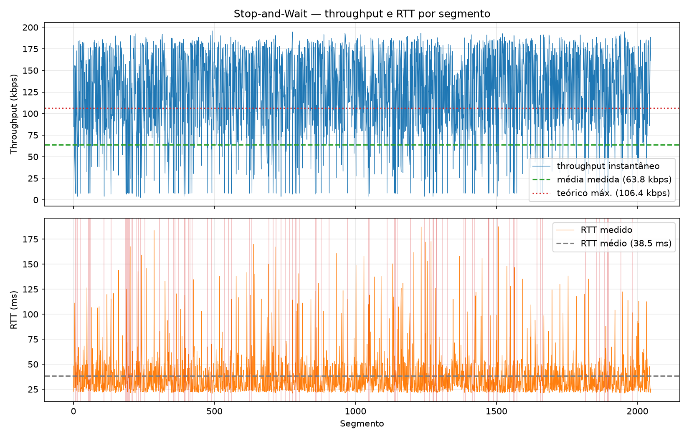

O UDP não garante entrega, ordem nem integridade dos datagramas. Nesta entrega implementamos, em Python e
apenas com socket UDP (SOCK_DGRAM), um cliente do protocolo RDT-UnB v1.0 que baixa um arquivo do
servidor do professor (137.131.178.229:8080/UDP) de forma confiável usando o protocolo
Stop-and-Wait (SAW): um segmento por vez, com timeout e retransmissão, e verificação final por MD5.
O servidor é pull-based (só responde a pedidos), então toda a lógica de confiabilidade fica no cliente.
--group é obrigatório (argparse com required=True; sem ele
o programa termina com erro). Também aceita --server, --file (small | medium | large),
--segment-size (512), --timeout (500 ms, fixo) e --max-retries.HELLO|grupo=grupo10|segment_size=512|file=… e espera o OK,
de onde lê file_size, checksum (MD5 esperado), total_segments e o
segment_size confirmado pelo servidor. O HELLO também é retransmitido em caso de timeout.n envia REQ|seq=n e espera o DATA com o mesmo
seq até o prazo do timeout. DATA com outro seq (duplicata atrasada) é descartado.
Se o prazo acaba, reenvia o REQ. Ao receber, envia ACK|seq=n, anexa o payload e passa a
n+1. Como só existe um segmento pendente, os dados chegam sempre em ordem.split(b"|", 3); tudo depois do 3º | é
payload, que pode conter o próprio byte |.hashlib) do arquivo montado, compara com o do OK, envia
FIN|checksum=<md5> e espera DONE|ok=1.metrics_grupo10_saw_<timestamp>.csv com uma linha por segmento
(segment, timestamp, size_bytes, rtt_ms, rtt_estimated_ms, timeout_ms, throughput_kbps, retransmissions,
timeout_occurred, window_size, protocol). O RTT é medido do último REQ enviado até o DATA;
o throughput instantâneo é size_bytes × 8 / (t_DATA − t_primeiro_REQ), incluindo os timeouts.
A coluna rtt_estimated_ms fica vazia (EWMA é a Entrega 3).Testes executados em 13/10/2026 contra o servidor real, sem simulação de perda, com
segment_size = 512 B e timeout fixo de 500 ms. Os três arquivos foram recebidos íntegros:
| Arquivo | Tamanho | Segmentos | MD5 recebido (= MD5 do OK) | DONE |
|---|---|---|---|---|
| small | 1 048 576 B | 2 048 | f989450f6ca695013ceb6bd3a5f6417c | ok=1 |
| medium | 5 242 880 B | 10 240 | 2593bb16a3f52e31a7b8773450e8da8b | ok=1 |
| large | 10 485 760 B | 20 480 | 5623bc385a7b296e6c57d99290c03c0f | ok=1 |
| Arquivo | Tempo total | RTT médio | RTT mín / mediana / máx | Teórico máx. | Medido | Medido / teórico | Retransm. |
|---|---|---|---|---|---|---|---|
| small | 131,9 s | 38,49 ms | 20,9 / 30,0 / 187,5 ms | 106,41 kbps | 63,62 kbps | 59,8 % | 105 |
| medium | 588,7 s | 39,17 ms | 20,2 / 29,0 / 473,9 ms | 104,56 kbps | 71,25 kbps | 68,1 % | 370 |
| large | 965,9 s | 35,58 ms | 18,7 / 25,6 / 243,0 ms | 115,13 kbps | 86,84 kbps | 75,4 % | 465 |
Exemplo (small): 512 × 8 / 38,49 ms = 4096 bits / 38,49 ms = 106,4 kbps teórico; medido 1 048 576 × 8 / 131,86 s = 63,6 kbps.

No Stop-and-Wait o cliente só pede o segmento n+1 depois de receber o segmento n. Portanto, a cada RTT atravessa a rede no máximo um segmento de 512 bytes (4096 bits). O tempo de transmissão desses 4096 bits é desprezível (≈ 0,04 ms num link de 100 Mbps) perto de um RTT de ~30–40 ms: o canal fica ocioso mais de 99,9 % do tempo esperando a resposta. Aumentar a banda quase não muda nada; o que define a vazão é quantos RTTs a transferência leva — e no SAW são N RTTs, um por segmento.
Os dados confirmam isso. O tempo total de cada teste é explicado quase exatamente por N × RTT_médio mais o tempo parado em timeouts:
| Arquivo | N × RTT_médio | Retransm. × 0,5 s | Soma | Tempo real | Diferença | Throughput sem o tempo de timeout |
|---|---|---|---|---|---|---|
| small | 78,8 s | 52,5 s | 131,3 s | 131,9 s | 0,6 s | 105,7 kbps |
| medium | 401,1 s | 185,0 s | 586,1 s | 588,7 s | 2,6 s | 103,9 kbps |
| large | 728,7 s | 232,5 s | 961,2 s | 965,9 s | 4,7 s | 114,4 kbps |
Descontado o tempo gasto em timeouts, o throughput fica em 104–114 kbps, praticamente igual ao teórico
512 × 8 / RTT de cada teste: cada segmento entregue custou um RTT. No gráfico da Figura 2 também se
vê a relação inversa: quando o RTT de um segmento sobe (picos de 100–190 ms), o throughput instantâneo
daquele segmento despenca, e os segmentos com RTT perto do mínimo (~21 ms) atingem ~190 kbps.
O throughput medido ficou entre 60 % e 75 % do teórico. A tabela acima mostra que a diferença não vem do código do cliente: a sobra entre o tempo real e N × RTT + timeouts é de 0,6 a 4,7 s, menos de 0,5 % do tempo total. A diferença vem de dois fatores:
Também há um pequeno overhead que não aparece no throughput útil: o cabeçalho textual
DATA|seq=…|total=…| e os cabeçalhos UDP/IP trafegam na rede, mas só os 512 bytes de payload
contam como dado entregue.
O cliente SAW transferiu os três arquivos com integridade confirmada por MD5 e DONE ok=1,
recuperando por timeout e retransmissão as perdas reais da rede (940 retransmissões no total). Os dados mostram que o SAW entrega um
segmento por RTT (~105–115 kbps de teto com RTT de ~36–39 ms, independentemente da banda do link) e que, na
prática, as perdas combinadas com um timeout fixo e conservador derrubam a vazão para 60–75 % desse teto.
Ambas as limitações motivam as próximas entregas: janelas deslizantes (GBN/SR) para ter vários segmentos em
trânsito por RTT, e timeout adaptativo para reagir mais rápido às perdas.